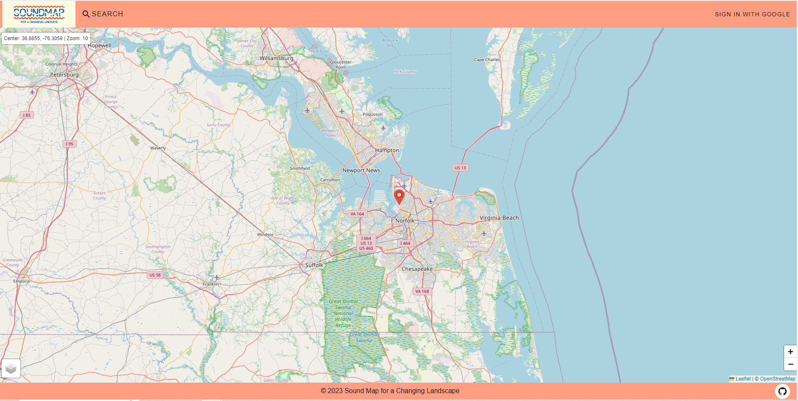

Sound Map for a Changing Landscape
Sound Map for a Changing Landscape is a group project I worked on during the Summer 2023 and Fall 2023 semesters at Old Dominion University for CS410 and CS411. My contributions include Google OAuth implementation, the search feature, and JSON Web Token implementation.
Sound Map for a Changing Landscape is a web-based, interactive digital sound map designed to get the public involved with the issue of climate change in the Tidewater region. It allows a user to record the soundscape of their location and upload it to the sound map on the location it was recorded. This allows people to experience the soundscape of what that location was like at a specific point in time. The goal is to show how the landscape and enviroment in the Tidewater region changes over time to connect the people of the Tidewater region to the landscape in which they live. This gets them to care about issues facing that landscape such as flooding, erosion, salt contamination, destruction of habitats, and changes in the climate. The interactive nature of this project is designed to involve the general public, which meakes it far more effective at getting them to care.